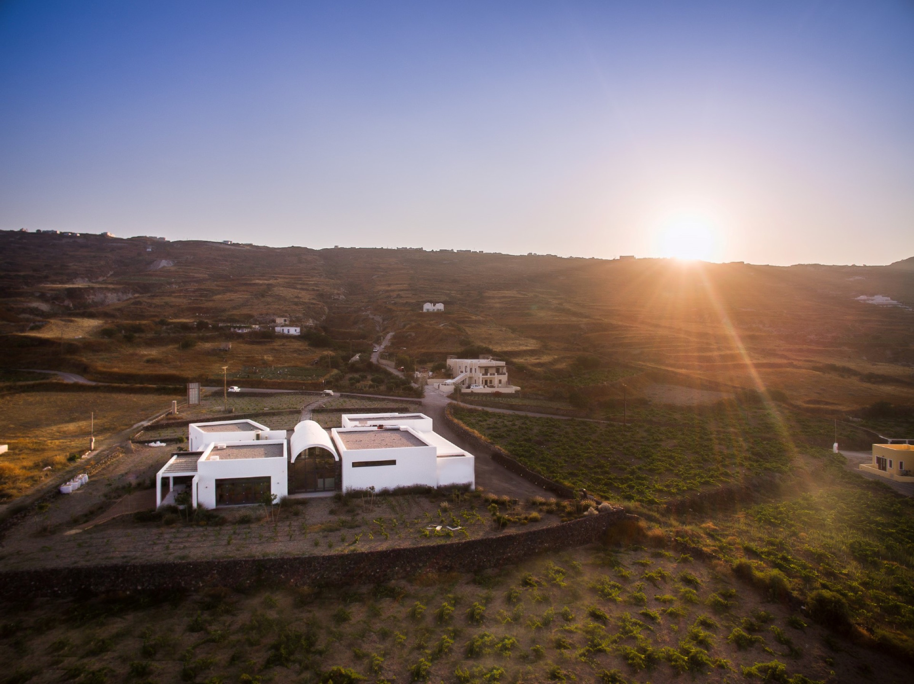
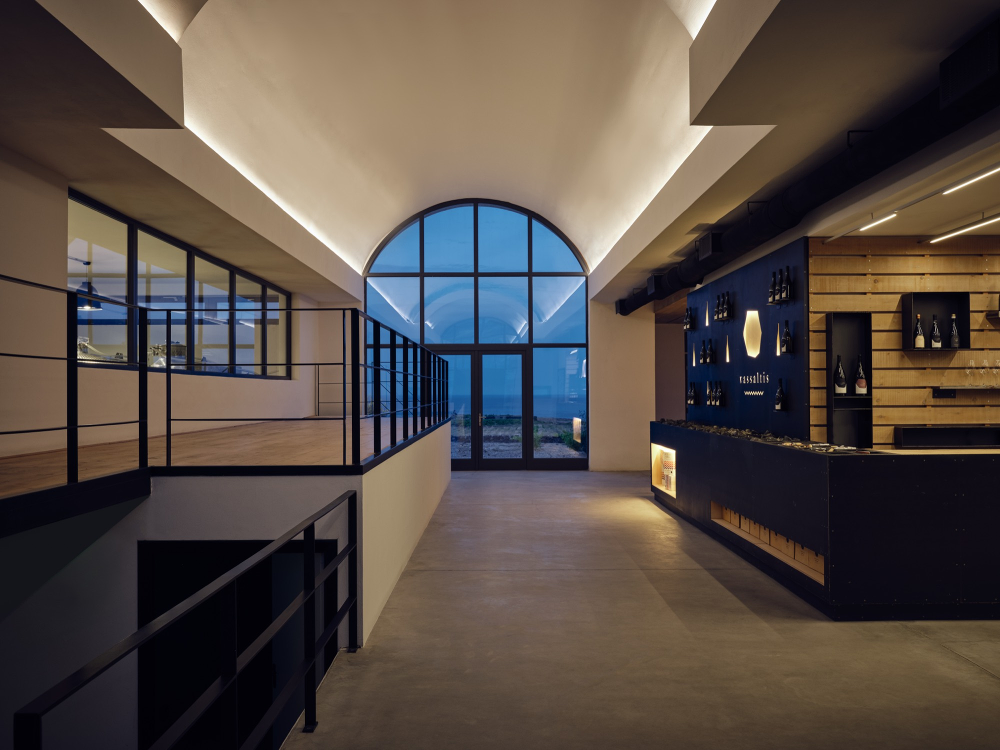

Our story · since 2014
Part dream,
part folly.
The 2010 Greek financial crisis may strike one as an incongruous time to begin a massive venture. And yet it was exactly this that brought Yannis Valambous home.

History
To breathe new life into inherited vines.
Yannis gave up his life as a successful economist in London and returned to Santorini, where he had spent many happy family holidays as a child, to revive the vineyards he inherited from his father.
He put together a winemaking team: first Elias Roussakis, then Yannis Papaeconomou, brought together by a shared vision to prove that Santorini can produce world-class wines. Among the four hectares his father left him, Yannis built a thoroughly modern, state-of-the-art boutique winery.
And so, in 2014, Vassaltis was born.
Our philosophy
We do not seek to return to our roots. We seek to grow on them.
Logos · Philosophy
Traditional yet sustainable evolution. As young winemakers, we build on traditions and modernise them, to pass the baton on in a way that is environmentally, socially and economically sustainable.
Pathos · Approach
Fine terroir wines, ready to drink on release. We trellis vines, harvest before dawn and hold wines in the cellar for two or even three years. We never force ageability artificially.
Ethos · Integrity
Integrity is not a choice of “if” or “when” but a mandate of always: in the wine, and in how we treat our team, suppliers, clients and colleagues.

The winery
Two continuous arches.
The main component of the building is the “neck”: two continuous arches that act as a virtual axle, at once dividing and connecting the production area and the tasting room. Large glass surfaces at each end open onto the sea, the surrounding islands and the vineyards.
Segments of local black volcanic rock counterpoint the white walls, which are interrupted by long horizontal skylights, creating a rhythm from sun-kissed white to lava black.
The vineyard
Soil, varieties, climate.
Soil
Layers of volcanic ash, pumice, sand and basalt, with little organic matter and no clay. Phylloxera never took hold, so many vines grow on their own roots, some well over a hundred years old.
Varieties
Assyrtiko above all, with Aidani, Athiri, Mandilaria and Mavrotragano. More than 30 traditional varieties still grow on the island.
Climate
About 200mm of rain a year. Morning sea mists water the vines, and the summer meltemi winds cool them and preserve their natural acidity.
Vintage reports
The people